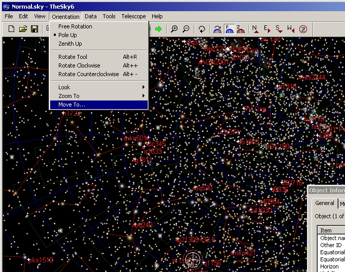
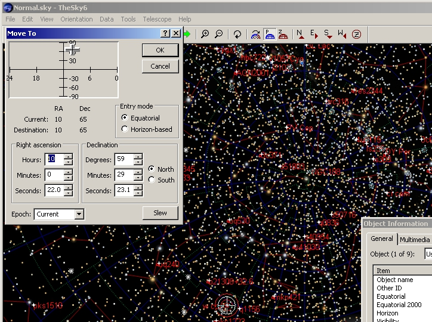

Что делать далее?
Навестись на координаты гамма-всплеска в Sky 6 можно следующим образом
1.
Orientation => Move To...

2.
Ввести R.A. и Dec. со страницы и нажать Slew.

Как снимать?
- По обстоятельствам.
Идея состоит в том, чтобы измерить степень поляризации оптического послесвечения гамма-всплеска ( и обнаружить вращение поляризации :-) ).
В настоящий момент есть только оценки степени поляризации, однако эта величина могла бы послужить серьезным ограничением на модели GRB, поэтому
это интересная задача.
Т.е. цель - снимать поляризацию (желательно много серий), но все зависит от блеска послесвечения.